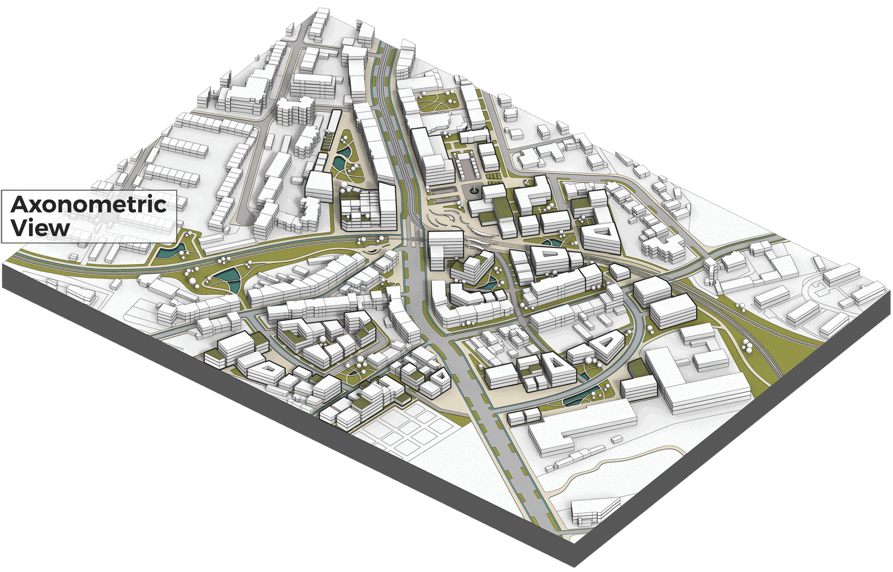

Urban Axis, Cologne/DE
Thesis, M.Sc.
The project focuses on the Poll district, where Siegburger Straße, part of the Porz Axis, divides the urban landscape. The area is characterized by a mix of architectural typologies and land uses but suffers from fragmentation and environmental challenges. Central to the design is the revitalization of Poll Wochenmarkt, aiming to transform it into a vibrant communal hub.

SWOT Analysis

Analysis Conclusions / Aspirations
The conclusions describes a planning framework for the Porz Axis, systematically organized into six parts: Social/Infrastructure, Socio-Cultural, Environmental, Transportation/Infrastructure, Socio-Economic and Planning/Infrastructure. The categorization not only represents the findings from the SWOT analysis but also explains the complex urban dynamics. Through dissecting the urban landscape into these separate yet interrelated categories, the framework aspires to uncover many challenges and opportunities that constitute the planning area's foundation.

Vision (Porz Axis), Concept (Neighborhood) & Strategic Vision (Poll Wochenmarkt)

Master Plan (Neighborhood)

Master Plan (Poll Wochenmarkt)
